Rope Tool
A 2D physics-based space shooter game.
Overview
Rope Tool is a 2D physics-based space shooter game where Ayra uses a rope to link rockets, generating powerful propulsion and destruction. Various enemies and formidable bosses stand in the way, challenging the journey ahead.
My Role
Level Design, focusing on Onboarding Level
The game currently. ↓
Duration
2 years and 2 months, 2023.1 - now
Team Size
16
Tools and Environment
Unity
Award
Onboarding with Grappling hook
All onboarding techniques described below will be introduced in the order in which they appear in the game.
Move/Rotation
Upon entering the game, players can only use the left mouse button to fire the grappling hook. The starting point is set in an area filled with meteors. After learning how to use the grappling hook through the UI, players will be able to grab meteors at random in this area to practice movement.
After familiarizing themselves with the grappling hook mechanics through the UI tutorial, players can practice by using the grappling hook to grab meteors scattered randomly throughout the area. This practice helps them refine their movement skills.
Rotation of the mouse will influence the orientation of the spacecraft, allowing players to control its direction more precisely.In the level, I placed immovable meteors and moving conveyor belts to help players master this skill.
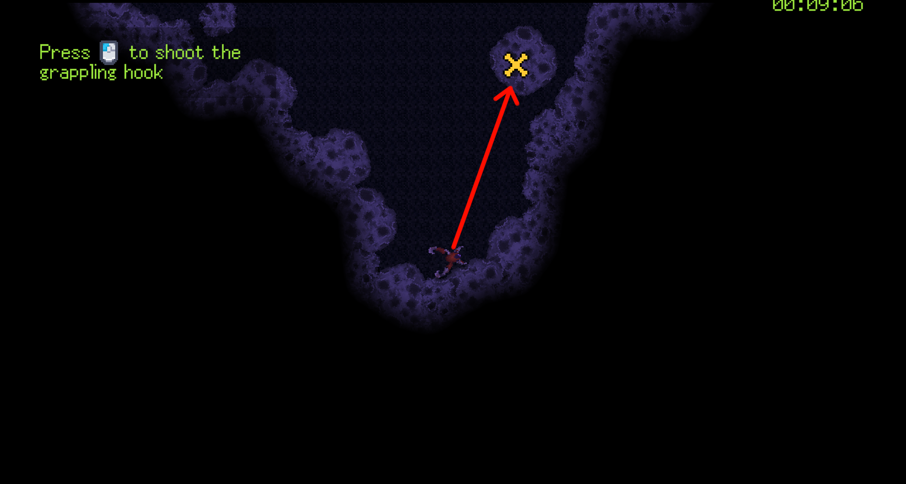
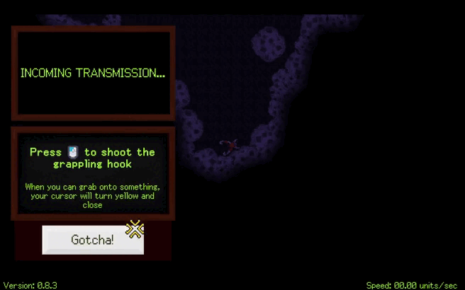


Swing
Swing is a necessary skill for fluent movement, and once mastered, it can provide a smooth gameplay experience. The first swing in the game is powered by the rear thrust of the wind tunnel. Players will experience acceleration for the first time and will be required to grab a wall at high speed, using the swing technique to transition into a side path.
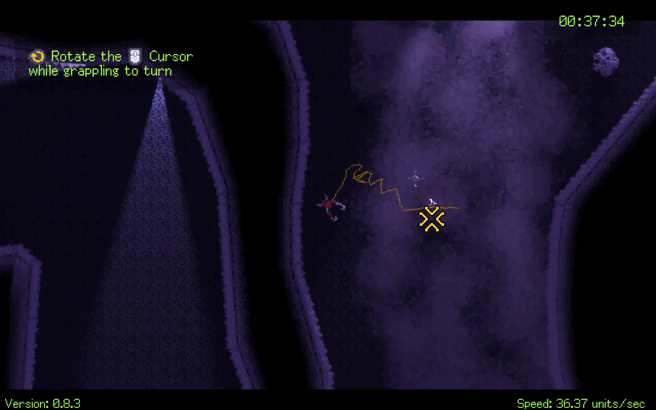
Onboarding with Rocket
First Rocket
Rocket is a stationary object that players can encounter in levels. Players can grab it using a grappling hook and connect it to their spacecraft. Since the direction of the connection is random based on player input, as part of the onboarding process, the first rocket will be automatically loaded and aligned with the orientation of the spacecraft, reducing the difficulty of player control.
Straight and Swing
Players will first be given a straight path to get used to the acceleration provided by the rocket. Following this, they will encounter several W-shaped tracks, all open areas designed to practice basic movements, rotations, and swings while experiencing rocket acceleration.
Swing with a Pin
After the player acquires the rocket, I realized that there needs to be a stable place for the player to test the rocket's thrust. Therefore, stationary pins will appear in subsequent areas, allowing the player to test their rocket and get used to the movement of the spacecraft with the rocket's propulsion system.
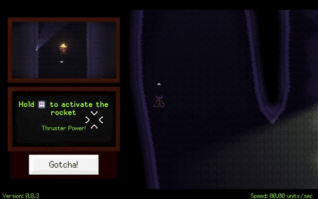
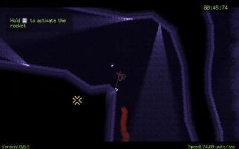

Multiple rockets with movement
Second Rocket
When the player acquires the second rocket, it will attach to the spacecraft according to the orientation at the moment of contact. The player will learn how to use the A and D keys to select which direction's rocket to activate.
Rocket Thrust.
To help the player better understand that the rocket thrust increases with each additional rocket, in this section, I have placed two asteroids side by side. The player will be able to push the asteroids using acceleration, thus grasping the principle of rocket thrust through this action.
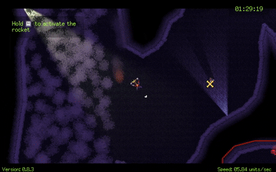

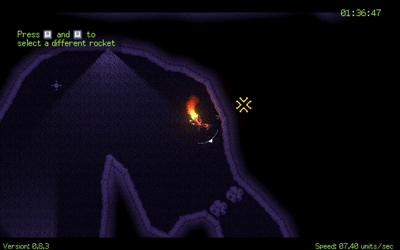
Shooting
The goal of this section map.
After acquiring multiple rockets, the player will learn how to shoot. I don't want the player to fire all their rockets and have them travel too far, forcing them to rely on the grappling hook to move slowly. Therefore, in this section, the red barricade lines and meteors will be used to restrict the rocket's flight path as much as possible, ensuring that after firing, the rockets won't travel too far due to inertia.
Fixed Path Tower
The player will first encounter the Fixed Path Tower. While avoiding its attacks is relatively simple, this marks their first encounter with combat ("Losing rocket" mechanic will be explained in detail below). To assist with this, the section will feature a more enclosed environment, allowing players to recover their rockets and take their time learning how to aim and attack enemies.
AI Fixed Path Tower
The AI Fixed Path Tower, which tracks the player's position for attacks, will soon appear. To give the player more freedom to dodge and avoid feeling restricted in a small area, this section will allow movement in an open space. As a result, the number of rockets available in the environment will also be increased.
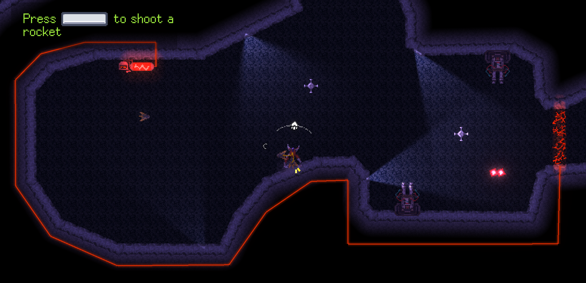
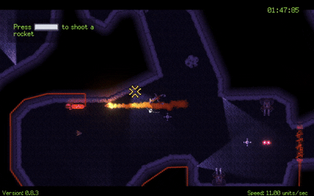
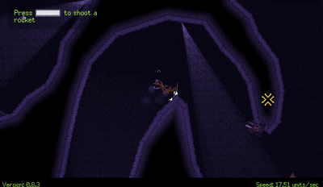
Losing Rocket
Being attacked does not result in the end of the game. Instead, the consequence of spacecraft damage is the loss of all rockets. This design choice supports the narrative and, within the context of simulating a spacefaring vessel, a single hit that causes the game to restart would be too harsh a punishment and could greatly diminish player engagement.
Imagine the player having five or more rockets; even though all rockets detach from the spacecraft upon being hit, the player can easily retrieve them, allowing them to quickly regain rocket propulsion.
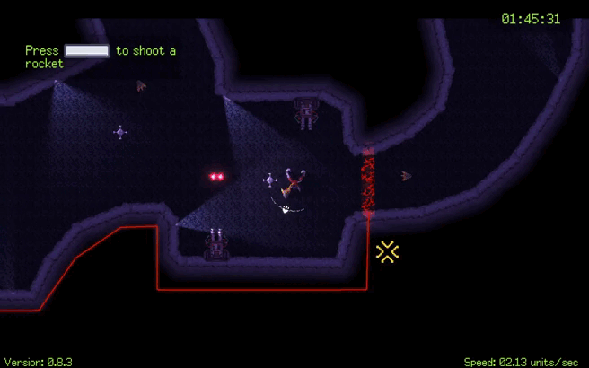